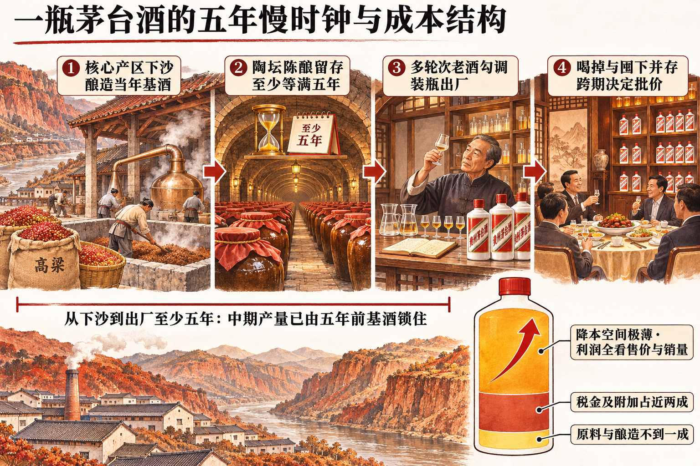
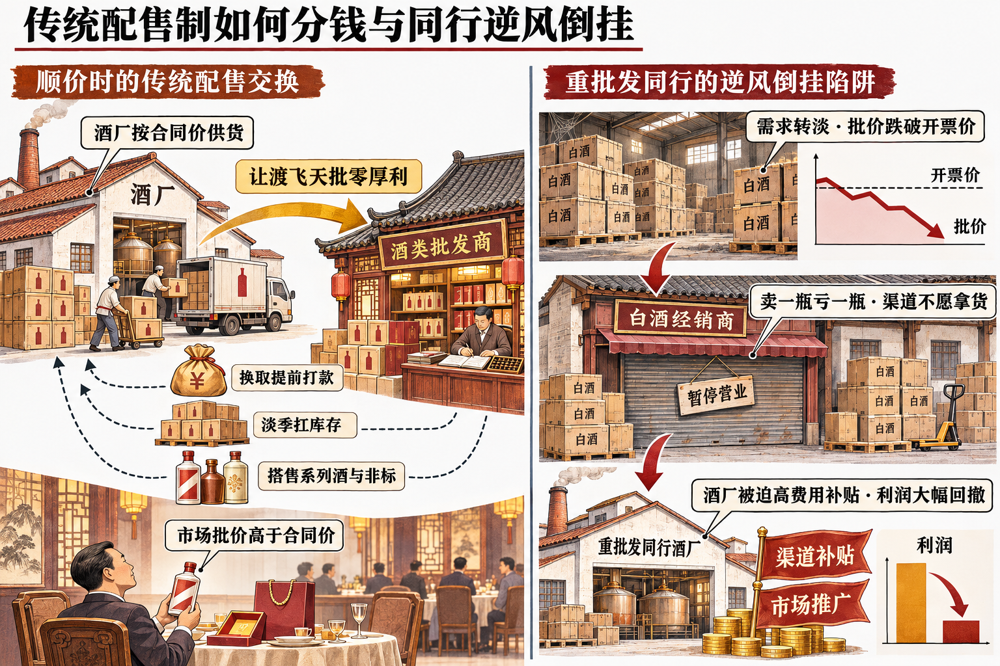
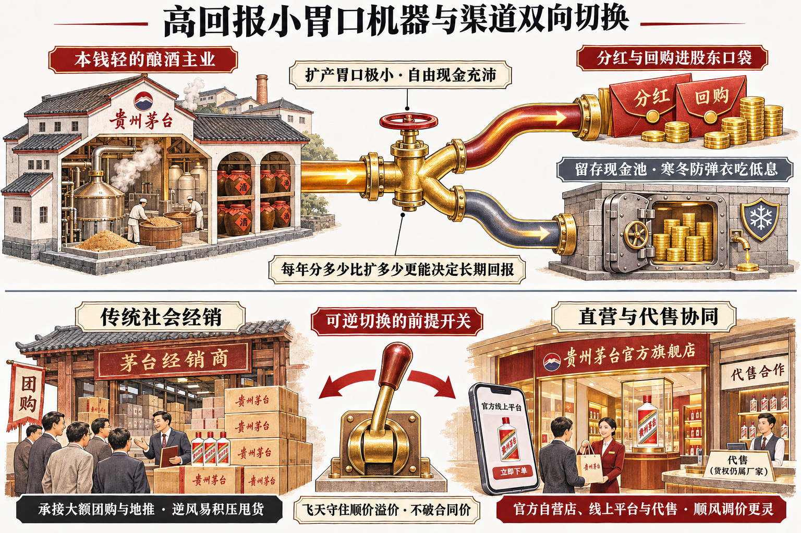

行业怎么运作：一瓶茅台酒如何从高粱走到酒桌
买家到底在掏什么钱、无法快进的五年酿酒时钟，以及轻成本重税负结构
后面四页算财报、反算估值、定三条破线，全都踩在同一块认知地板上：买一瓶几千块的白酒究竟在买什么，为什么赚钱时酒厂也没法一年扩产翻倍，钱又是怎么从酒厂流向酒桌的？翻账本之前，先把高端白酒的运转机器、茅台自己的赚钱模式，以及全篇依赖的七块底层地基用大白话摊开讲清。
先看买酒的人在掏什么钱。一瓶可乐或普通啤酒喝完就结束了，需求只看大家渴不渴；一瓶飞天茅台过去多年却同时装着三件东西——自己入口的酒、商务饭局和送礼时“拿出来不用多解释”的体面，以及因为越放越稀缺而带上的“能存、能转手”的硬通货属性。正因为它能长期放着不坏，市场批价并不是今天有多少人开瓶就定多少价：觉得将来还要涨时，囤酒的人一起抢，越抢越缺；觉得将来不涨了，手里的存货一起往外抛，价格就会往下压。
这一轮行业调整里，茅台的买点正处在“社交硬通货”与“真实喝掉”的拉锯中。一方面飞天散瓶批价依然明显高于合同价，另一方面高价非标产品承压、预收款缩水，两面证据同时摆在台面上。买酒的人究竟更偏哪一头，研究者于 2026-11-15 定下不先站队，后续再结合具体量价数据细拆（详见叙事之果·量价边界）。至于高端白酒将来会不会像烟草那样走“总量缓滑、单价上移”的路子，目前只能作为类比方向的设问，不能当作既定事实。
再看为什么供给拧不开大水龙头。普通饮料厂生意好，买几条灌装线、半年就能把产量翻倍；茅台酒却离不开赤水河那一块核心产区，而且从粮食下沙酿出基酒，到装进陶坛陈酿、再用不同年份的老酒勾兑装瓶，中间隔着一条无法快进的五年慢时钟。贵州茅台 2025 年年度报告写明：「特殊的地形地貌、气候环境，优质的酿酒水源，独一无二的原产地保护和不可复制的微生物菌落群是贵州茅台酒核心产区的独特特征。」
同份年报也交代了五年工艺铁律：「为保证公司可持续发展，每年需留存一定量的基酒，按生产工艺，茅台酒从生产到出厂至少需要五年。」并补充说明：「茅台酒是由不同年份、不同轮次、不同浓度的基酒相互勾兑而成，是技术和艺术的完美结合，因此某一年份的基酒可能在未来数年都会作为产品出现。」

- 五年时钟在账面上留下的硬刻度：2025 年茅台酒基酒设计产能为 4.64 万吨，2021 至 2025 年实际基酒产量落在 5.63 至 5.85 万吨，2025 年末总存酒量达 34 万吨（其中半成品基酒库存 31.52 万吨，其余为成品酒）。2026 年第三季度业绩说明会进一步确认：「当前，2027年度贵州茅台酒的下沙生产已经结束，经前期综合评估后，未新增茅台酒基酒产能。」行情好时放不出大水，行情弱时也不用怕过期甩卖；逐年存酒与吨成本明细留在财报之根·存酒与成本。
- 成本极薄、税负极重，没有靠降本翻倍的空间：做一瓶酒的粮食、酒瓶和酿造人工花不了多少钱——2025 年茅台营业成本只占营业收入的 8.82%，茅台酒毛利率高达 93.53%；而交给国家的税金及附加占营业收入的 16.20%，仅消费税一项就达 217.97 亿元（占营业收入的 12.91%）。原料太薄、税负刚性，决定这门生意几乎抠不出降本利润，长期赚多赚少全看卖得出多少吨和卖到什么价。
谁在场内分钱：配售制的利益交换与同行逆风倒挂
酒厂、经销商和消费者三层怎么分钱，以及为什么重批发同行一遇逆风先现形
先答一个最常见的问题：酒厂合同价和市场零售价之间那一大截差价，到底被谁赚走了？一瓶高端白酒从酒厂流向酒桌，酒厂拿走账面利润大头，出厂价与终端成交价之间的价差池则长期归社会经销商切分。过去十年，茅台传统经销的玩法很像奢侈品“配货”：酒厂把最抢手的飞天茅台按低得多的合同价批给经销商，让他们稳稳赚走厚厚的差价；作为交换，经销商心甘情愿提前打现金订货、淡季帮酒厂扛库存、跑企业团购，并顺带消化毛利较低或没那么好卖的系列酒与高价非标酒。
拉长到十年一算总账，这笔交换并不对称。据研究推算，2016 至 2025 年间，社会经销商围绕茅台批发渠道切走的批零价差池保守下沿为 5,094 亿元，按合同价口径上沿高达 7,105 亿元。相对应地，经销商提前打款帮茅台省下的税后存款利息推算只有 24 亿元，茅台同期较同行少花的销售费用税后累计推算为 852 亿元，真正高度依赖这批经销商跑地面网络托举起来的，是系列酒十年累计贡献的 991 亿元毛利。
行业里真正能赚超额利润的位子极少。赤水河核心产区、数十年攒下的老酒库存与全国范围无须解释的送礼共识，共同挡住了外来资本砸钱抢位。把四家主要上市白酒企业摆在同一张桌上，规模、毛利、渠道形态与逆风表现的落差一目了然。
| 公司 | 2025营业收入（亿元） | 2025归母净利润（亿元） | 2025毛利率（%） | 2025销售费用率（%） | 2026上半年直销占比（%） | 2026上半年批发占比（%） | 2026前三季归母同比（%） | 估值日总市值（亿元） | 静态市盈率（倍） |
|---|---|---|---|---|---|---|---|---|---|
| 贵州茅台 | 1,688.4 | 823.2 | 91.18 | 4.30 | 57.32 | 42.68 | −0.25 | 17,942 | 21.8 |
| 五粮液 | 405.3 | 89.5 | 77.54 | 18.82 | 31.23 | 68.77 | −61.05 | 2,848 | 31.8 |
| 泸州老窖 | 257.3 | 108.3 | 86.62 | 12.58 | 8.80 | 91.20 | −47.31 | 1,172 | 10.8 |
| 洋河股份 | 192.1 | 22.1 | 71.60 | 27.10 | — | — | −53.94 | 541 | 24.5 |
估值日 2026-11-13；洋河财报未拆直销与批发收入，以空缺示；五粮液 2026 年前三季归母净利润受 2025 年会计差错更正追溯重述影响，主表列较 2024 同期 −61.05%（对重述后 2025 同期同比 +49.98%）。

为什么重批发同行在逆风期更容易先受伤？关键在“价格倒挂”四个字——通俗讲，就是烟酒店实际能卖出去的批发价，跌破了酒厂给经销商的开票进货价，经销商进一瓶亏一瓶，自然不愿再掏钱拿货。2026 年上半年，五粮液经销批发占比仍达 68.77%，泸州老窖传统渠道占比达 91.20%。截至估值日前后，普五批价相对开票价倒挂 269 元，国窖批价相对结算价倒挂 150 元；酒厂为了稳住打款只能掏出高额补贴和营销费用，2026 年前三季五粮液销售费用率攀升至 23.73%，而茅台仅为 3.69%（上表主列五粮液较 2024 年同期的利润变动以绕开 2025 年会计差错更正追溯重述干扰，完整渠道三本账见叙事之果·渠道三本账）。
这里须守住一条边界：同行逆风失速与茅台利润平稳，同时混有飞天稀缺顺价、产品结构、同行会计重述与渠道形态等多重因素，与“握住终端缓冲甩货”的解释相容，不能简化成单一渠道改革的必然因果；高端生态位在同行之间固化，也不代表全行业高端需求能免疫宏观与代际波动。
茅台的生意模式：一台高回报小胃口机器与渠道双向切换
轻本钱高造血为何怕现金趴账、直营加代售的进退逻辑，以及系列酒副业的边界
把茅台放回上面的棋盘，它的生意底色一句话就能讲清：用很轻的厂房和存货本钱，酿出极其丰厚的自由现金，但受限于产区与工艺，赚回来的钱几乎没地方大举扩产。剔除账面净现金与金融资产后，2026 年三季末茅台酒业实体经营资产推算为 910 亿元；拿 2025 年不含现金利息的酒业利润起点 793 亿元去对照这一时点实体资产（两者属跨期推算，只用于展示高经营回报量级，并非同期间精确财务比率），可见酿酒主业本身赚钱效率极高。

- 为什么“小胃口”让分红纪律比扩产更重要？普通好公司赚了钱，可以多盖新厂、多开门店把雪球滚大；茅台在建工程尾款花完后，几乎没有同等高回报的新扩产去处。按国企过日子先求稳的现实，账上囤积的巨额现金大概率充当抵御行业寒冬的“防弹衣”，而不是随时拆完的红包。贵州茅台 2025 年第三季度业绩说明会说得明白：「公司决定在盈余公积达到股本的50%后，每年仍计提法定盈余公积，主要是为了应对未来经营风险，提升公司抗风险能力，增强熨平行业周期实力，为茅台高质量、可持续发展构建更为坚实的基础。」正因如此，新赚的钱分给股东多少、留账吃低息多少，比扩产更能左右股东真实回报；具体现金扣减与留存折损见财报之根·家底与现金及分配机制。
- 2026 年改做直营和代售，到底改了什么？2025 年茅台酒类直销收入占比刚过半、达 50.09%（当年直销毛利率 94.58%，高出批发代理毛利率 87.86% 计 6.72 个百分点，i 茅台当年仅占直销 15.41%）。2026 年 1 月，公司发布市场化运营方案：「由“自售+经销”的传统销售模式向“自售+经销+代售+寄售”多维协同的营销体系转变，以更好适配、触达、转化消费需求。」同期方案提出：「以市场为导向，构建“随行就市、相对平稳”的自营体系零售价格动态调整机制。当前自营体系零售价已在 i 茅台和自营店执行。」2026 年半年度报告随即划定官方口径：「直销渠道指线下自营门店、i 茅台平台、代售等，批发代理渠道指社会经销商、商超、电商等。」到 2026 年前三季，直销占比升至 56.36%，i 茅台占直销跃升至 79.38%，国内经销商仍保持 2,285 家。
- 直营与代售的真实边界：好在哪、卡在哪？所谓“代售”，通俗讲就是酒的物权先留在酒厂手里，请线下门店帮忙卖、卖掉再结算服务费，不再逼着经销商先掏大钱囤货。这么做能减少渠道积压与乱甩货，但也有两道天花板：一是线上平台有限购，企业大额团购、熟人交付与线下陪酒服务仍离不开社会渠道，直销占比有现实上限；二是 2026 年第三季度业绩说明会也坦言：「代售模式依托线下社会渠道商门店，与i茅台基本形成“线上管效率与触达、线下管转化与服务”的协同机制，但运营仍处于探索之中，需要进一步改进完善。」目前财报尚未单列代售金额与佣金率。
- 为什么研究者认为这是一场“可进可退”的可逆切换？研究者于 2026-11-16 定下判断：只要飞天茅台在市场上的批价还能稳稳高出合同价，这一轮直营控盘就属于顺应市场环境的可逆切换。经销商追逐稳定利差，飞天又缺少直接替代品，一旦外部需求转暖，酒厂随时保有把部分配额交回社会渠道的主动权。更关键的是，高直销配上“随行就市”，顺风时会变成比传统调出厂价灵敏得多的提价管道；逆风时则会放大非标、系列酒与履约费用摩擦，具体压测见叙事之果·摩擦压测。
- 副业边界：茅台酒扛主账，系列酒只能当补充。2025 年茅台酒贡献了酒类收入的 86.8%（毛利率 93.53%）；系列酒占酒类收入的 13.2%（毛利率 76.11%），仅占酒类毛利的 11.01%。系列酒在充分竞争的次高端市场拼杀，比飞天更依赖社会经销商一家家烟酒店去推，能做产能利用和价格带延伸，体量与盈利层级都替不了主酒。
研究前提与认知标记：整篇研报踩在哪七块地基上
显性标出全篇承重前提的性质分类，并钉好每一条的推翻开关
任何估值结论都踩在一层底层认知上。下面七块地基按性质分为三类：工艺与制度约束 是最难改变的产区、工艺、税制与资金恒等式，历史归纳 来自过往多轮白酒周期的经验总结、换环境可能失效，研究假设 是研究者主动押下的关键判断，也是全篇最需要持续盯紧的脆弱点。
茅台酒从生产到出厂至少需五年且依赖赤水河核心产区。2021 至 2025 年基酒产量 5.63–5.85 万吨，叠 2027 年度下沙未新增产能，在 80%–86% 折算假设下将 2031 年前不透支老酒的可售量框在 4.5–5.0 万吨；“十四五”技改约 1.98 万吨需待 2032 至 2035 年释放。
酒业实体经营资产约 910 亿元、在建尾款 232 亿元消化后净扩张需求极小。凡未分配而低息留存、按约 1.69% 税后存款利率生息的自由现金，在较高要求回报率下必然按存款利率除以回报要求的比例折损，直接拉低等效转化率。
2025 年营业成本仅占营业收入 8.82%，而税金及附加率达 16.20%（其中消费税 217.97 亿元）。生产成本端缺少压缩空间，终局利润增减高度系于吨价与销量。
过去数轮白酒调整中，茅台依靠核心产区、五年老酒工艺与“免解释”社交共识守住价格带顶端，批价长期高于合同价，重批发同行在逆周期普遍更早陷入批价深度倒挂与渠道出清。
关于买酒者究竟在买硬通货还是真实消费，研究者于 2026-11-15 定下不先站队，当前两面证据并存。最可能档酒业利润（1,152–1,222 亿元）押在需求属周期打折、十年全系含税单瓶温和抬升至 2,165–2,300 元；最好档（1,579–1,958 亿元）则押至 2,500–3,096 元。
估值日飞天散瓶批价 1,680 元较 1,369 元合同价尚高出 311 元；研究者押注该价差不跌破 150 元底线（即批价不跌破约 1,520 元且不击穿合同价），且直营与代售改革带来的系列酒与非标滑坡加新增运营费用，年净代价远低于 200 亿元警戒线、不压穿 1,061 亿元常态酒业底线。
研究者在未见特别分红前不把 1,782 亿元可支配现金直接抵减市值，同时假设 2027–2029 新三年规划把实际分红加回购守在 85% 附近（底线不低于 75%），并愿按对标长江电力的准红利坐标持有。
| 常见误判 | 更贴近生意的读法 | 对应本页哪一节 |
|---|---|---|
| 拿飞天合同价与批价差，直接重算全部销量的直营提价空间 | 2025 年全系含税实现均价 1,667 元（粗算 1,771 元）已含高价非标、陈年酒与过半直销，与估值日普通飞天散瓶批价 1,680 元大体相当；总量模型不可按 1,369 元起步重算一遍直营价差，仅传统批发里的普通飞天留有局部顺价空间。 | 第三节 · 茅台的生意模式 |
| 给 34 万吨存酒另加一笔“市价增值” | 现金流反算已经把未来售酒的高毛利全部折回现价，再按市价加回存货属于重复计算；账面存酒的意义在于家底无水分与供给安全垫，不另增估值。 | 第一节 · 行业怎么运作 |
| 把预收款缩水 59.22 亿元单边读成需求崩盘或纯属好消息 | 合同负债大降叠加了一手交钱一手发货、停止压货、代售不形成预收款及部分产品调价等多重因素，须还原预收看订单口径；2026 年第三季度业绩说明会亦提示：「随着公司市场化运营的深入推进，预收账款的规模大小，已不再是衡量市场供求态势的主要指标。」 | 第三节 · 茅台的生意模式 |
| 把账上现金一把抵减市值，或忽略同行会计重述噪音 | 国企 1,782 亿元可支配现金在未见特别分红前主口径按“永远不分”只折现利息，不直接减市值；同行对照须剔除五粮液 2025 会计差错更正重述噪音并用无重述同业交叉验证，不把同期表现直接写成单一因果。 | 第二、三节 · 格局与模式 |
本表沉淀高端酱香白酒商业模式中最易混淆的四组关系；单期科目明细与现金扣减桥归入“财报之根”，口径符号与误差带归入“数据底表与口径”。
复查节点与公开盲区：年报核验窗口及四项财报未拆分项
复查节点。关键集中复查窗口在 2027-04-30（2026 年年报与 2027–2029 新三年分红及市值管理整体方案落地期），重点核验地基六对应的渠道摩擦代理指标与地基七对应的分配比例；日常则持续跟踪飞天散瓶批价相对合同价的价差及季报直销占比变化，完整推翻规则见叙事之果·什么会推翻。
公开盲区。其一，财报未按普通飞天与高价非标产品拆分收入和销量；其二，2026 年直销口径含代售，但尚未单列代售收入规模与代售佣金率；其三，公司未披露社会渠道绝对库存吨数，2026 年半年度业绩说明会披露的「2026年上半年，通过渠道布局的市场化改革，消费侧触达面更为广泛，社会渠道体系库存茅台酒每月存销比（月末库存/当月销量）均小于1.0，社会渠道流通库存处于良性健康水平」仅覆盖该半年期间；其四，目前缺少带样本方法的第三方独立开瓶率调查原件，需求定性仍待跨周期观察。
至此，高端酱香白酒的五年慢时钟、场内分钱格局、茅台生意模式与全篇踩着的七块地基已经摊开。接下来进入定量验真：先到财报之根把现金与自由现金流账拆透，再去估值之茎用滑块和矩阵验算现价押注与跨资产对标，最后到叙事之果看清量价上限与三条破线重算规则，全部原始序列收于数据底表与口径。